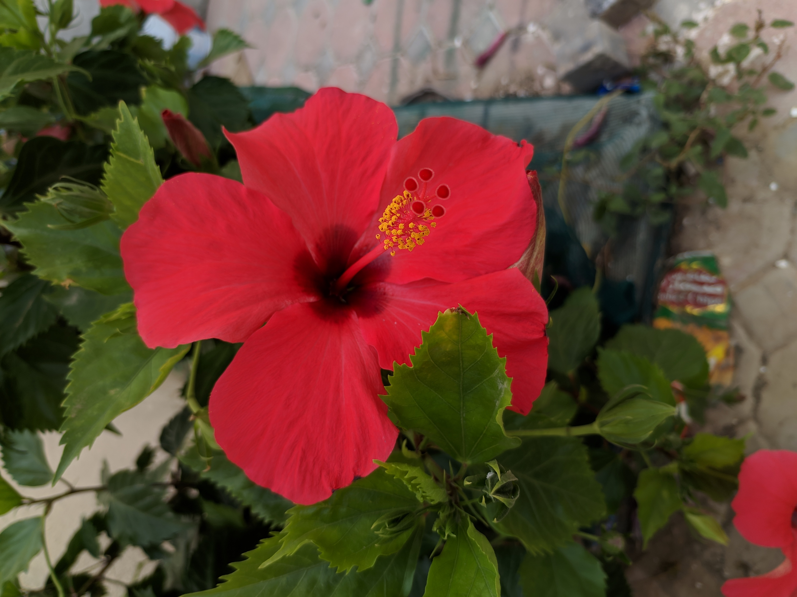
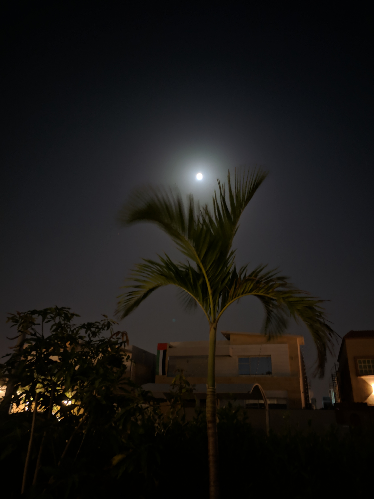

My Gallery
A collection of my favorite moments captured through my camera.

Nature Beauty
📅 Date: 2010
📍 Location: Bangladesh
A beautiful moment captured from my love for nature and photography.

চাঁদের আলোয় ভেজা
📅 Date: ২০২৪
📍 Location: আজমান, আরাব আমিরাত
কোন এক জ্যৈাৎস্না স্নাত রাতে জ্যৈাৎস্নায় ভেজার মূহুর্তে।

"Green, clouds and spirituality" ❝সবুজ, মেঘ আর আধ্যাত্মিকতা❞
📅 Date: 2019
📍 Location:আনিস বাড়ি জামে মসজিদ, নলুয়া,সাতকানিয়া,চট্টগ্রাম,বাংলাদেশ
❝সবুজ, মেঘ আর আধ্যাত্মিকতা❞—তিনটি রূপের এক অপূর্ব মেলবন্ধন ফুটে উঠেছে এই দৃশ্যটিতে। একদিকে দিগন্ত জোড়া ঘন কালো মেঘের আনাগোনা, অন্যদিকে পায়ের নিচে ঘাসফুলের স্নিগ্ধ সবুজ গালিচা। আর এই দুইয়ের মাঝে শান্ত হয়ে দাঁড়িয়ে থাকা নীল গম্বুজের মসজিদটি যেন কোলাহলময় পৃথিবীর মাঝে এক টুকরো শান্তির নীড়। প্রকৃতির রূক্ষ মেঘলা আমেজ আর সবুজ ঘাসের জীবনপ্রবাহকে ছাপিয়ে মসজিদের উপস্থিতি মনের ভেতরে এক অদ্ভুত আত্মিক অনুভূতি ও প্রশান্তি এনে দেয়।

Nature Beauty
📅 Date: 2018
📍 Location:Anis Bari Jame Mosjid,Nalua,Chattogram, Bangladesh
A beautiful moment captured from my love for nature and photography.

Paddy fild
📅 Date: 2018
📍 Location:Beside Anis Bari Jame Mosjid,Nalua,Chattogram, Bangladesh
The natural beauty of paddy fields.